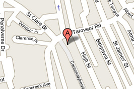

quality fish & chips...
Market Plaice Fish Bar is located at the top of causeway head, on the right if you are walking up. The link below takes you to Google maps, where full directions and interactive map are available.
 Click image for larger map